第四节 Gateway 设计与实现
目录
- Gateway简介
- Gateway vs Kubernetes Ingress
- Gateway原理及实现
- Gateway demo演示
1、Gateway简介
在Istio中，Gateway控制着网格边缘的服务暴露。
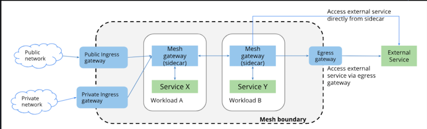
Ingress Gateway + Egress Gateway
Gateway也可以看作网格的负载均衡器， 提供以下功能:
- 1) L4-L6的负载均衡
- 2) 对外的
mTLS
Istio服务网格中，Gateway可以部署任意多个，可以共用一个， 也可以每个租户、namespace单独隔离。
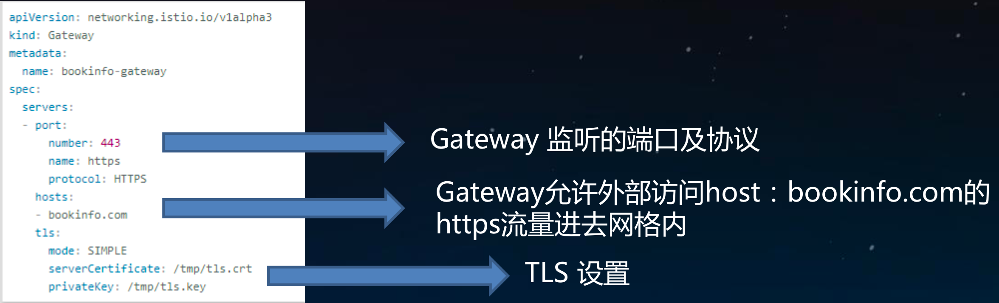
- Port: number: 443 => Gateway 监听的端口及协议
- hosts: bookinfo.com =>
Gateway允许外部访问host:bookinfo.com的https流量进去网格内 - tls => TLS 设置
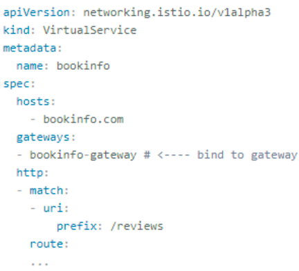
VirtualService定义Gateway L7路由， 为访问 bookinfo.com的https流量，提供路由匹配转发策略
Gateway根据流入流出方向分为ingress gateway和egress gateway
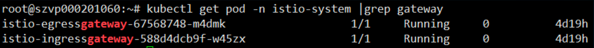
Ingress gateway:
控制外部服务访问网格内服务，配合VirtualService
Egress gateway:
控制网格内服务访问外部服务, 配合DestinationRule ServiceEntry使用
2、Gateway vs Kubernetes Ingress
Kubernetes Ingress集群边缘负载均衡， 提供集群内部服务的访问入口，仅支持L7负载均衡，功能单一
Istio 1.0以前
利用Kubernetes Ingress实现网格内服务暴露。 但是Ingress无法实现很多功能:
L4-L6负载均衡- 对外
mTLS SNI的支持- 其他
istio中已经实现的内部网络功能:Fault Injection，Traffic Shifting，Circuit Breaking，Mirroring
**为了解决这些这些问题，Istio在1.0版本设计了新的v1alpha3 API。
**
* Gateway允许管理员指定L4-L6的设置:端口及TLS设置。
* 对于ingress 的L7设置，Istio允许将VirtualService与Gateway绑定起来。
* 分离的好处:用户可以像使用传统的负载均衡设备一样管理进入网格内部的流量，绑定虚拟IP到虚拟服务器上 。便于传统技术用户无缝迁移到微服务。
3、Gateway原理及实现
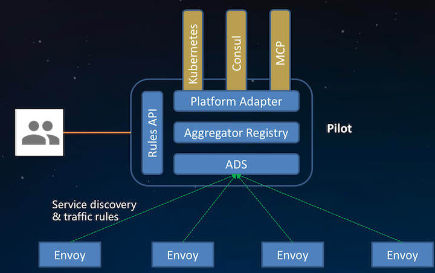

Gateway 与 普通sidecar均是使用Envoy作为proxy实行流量控制。
Pilot为不同类型的proxy生成相应的配置Gateway的类型为routersidecar的类型为sidecar
3-1 Ingress Gateway 启动参数:
$ kubectl -n istio-system exec -ti istio-ingrssgateway-*** sh
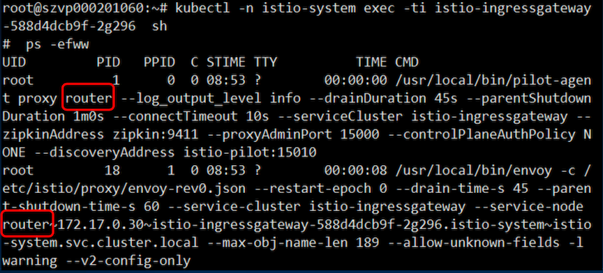
3-2 Sidecar启动参数:
$ kubectl -n istio-system exec -ti istio-proxy-*** sh
$ ps -efww
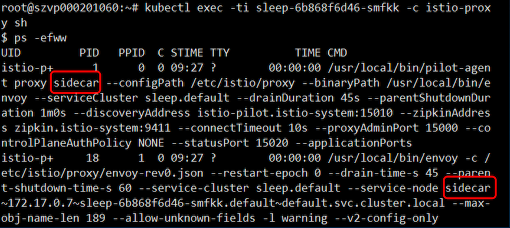
3-3 Pilot如何得知proxy类型?
Envoy发现服务使用的是xDS协议，Envoy向server端pilot发起请求 DiscoveryRequest 时会携带自身信息node，node有一个ID标识， pilot会解析node标识获取proxy类型。
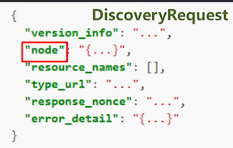 ANd 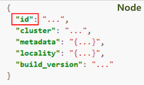
Envoy的节点标识可以通过静态配置文件指定，也可以通过启动参数 --service-node指定
Gateway对象在Istio中是用CRD(CustomResourceDefinition)声明的，可通过
$ kubectl get crd gateways.networking.istio.io 验证
$ kubectl get crd gateways.networking.istio.io -oyaml
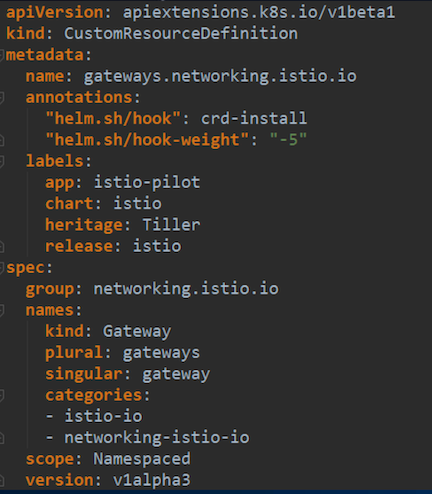
Istio networking所有配置API定义:
https://github.com/istio/api/tree/master/networking/v1alpha3
type Gateway struct {
// REQUIRED: A list of server specifications.
Servers []*Server `protobuf:"bytes,1,rep,name=servers" json:"servers,omitempty"` // REQUIRED: One or more labels that indicate a specific set of pods/VMs
// on which this gateway configuration should be applied.
// The scope of label search is platform dependent.
// On Kubernetes, for example, the scope includes pods running in
// all reachable namespaces.
Selector map[string]string `protobuf:"bytes,2,rep,name=selector"
json:"selector,omitempty" protobuf_key:"bytes,1,opt,name=key,proto3"
protobuf_val:"bytes,2,opt,name=value,proto3"`
}
Servers []...: 定义虚拟服务器端口协议，TLS设置等Selector map[string]: 标签匹配,k8s中所有namespace的pod都会进行匹配
type Server struct {
// REQUIRED: The Port on which the proxy should listen for incoming
// connections
Port *Port `protobuf:"bytes,1,opt,name=port" json:"port,omitempty"`
// REQUIRED. A list of hosts exposed by this gateway. At least one
// host is required. While typically applicable to
// HTTP services, it can also be used for TCP services using TLS with
// SNI. May contain a wildcard prefix for the bottom-level component of
// a domain name. For example `*.foo.com` matches `bar.foo.com`
// and `*.com` matches `bar.foo.com`, `example.com`, and so on.
//
// **Note**: A `VirtualService` that is bound to a gateway must have one
// or more hosts that match the hosts specified in a server. The match
// could be an exact match or a suffix match with the server's hosts. For
// example, if the server's hosts specifies "*.example.com",
// VirtualServices with hosts dev.example.com, prod.example.com will
// match. However, VirtualServices with hosts example.com or
// newexample.com will not match.
Hosts []string `protobuf:"bytes,2,rep,name=hosts" json:"hosts,omitempty"`
// Set of TLS related options that govern the server's behavior. Use
// these options to control if all http requests should be redirected to
// https, and the TLS modes to use.
Tls *Server_TLSOptions `protobuf:"bytes,3,opt,name=tls" json:"tls,omitempty"`
}
type VirtualService struct {
Hosts []string `protobuf:"bytes,1,rep,name=hosts" json:"hosts,omitempty"`
Gateways []string `protobuf:"bytes,2,rep,name=gateways" json:"gateways,omitempty"` // An ordered list of route rules for HTTP traffic. HTTP routes will be
// applied to platform service ports named 'http-*'/'http2-*'/'grpc-*', gateway // ports with protocol HTTP/HTTP2/GRPC/ TLS-terminated-HTTPS and service
// entry ports using HTTP/HTTP2/GRPC protocols. The first rule matching
// an incoming request is used.
Http []*HTTPRoute `protobuf:"bytes,3,rep,name=http" json:"http,omitempty"`
Tls []*TLSRoute `protobuf:"bytes,5,rep,name=tls"json:"tls,omitempty"`
Tcp []*TCPRoute `protobuf:"bytes,4,rep,name=tcp" json:"tcp,omitempty"`
ConfigScope ConfigScope
}
Hosts []: 域名，根据平台的不通可以不是FQDNGateways: Gateway选择Http []: HTTP路由Tcp []: TCP路由ConfigScope: 规则作用域，namespaced/meshscoped
// Describes match conditions and actions for routing HTTP/1.1, HTTP2, and
// gRPC traffic. See VirtualService for usage examples.
type HTTPRoute struct {
Match []*HTTPMatchRequest `protobuf:"bytes,1,rep,name=match" json:"match,omitempty"`
Route []*HTTPRouteDestination `protobuf:"bytes,2,rep,name=route" json:"route,omitempty"` Redirect *HTTPRedirect `protobuf:"bytes,3,opt,name=redirect" json:"redirect,omitempty"` Rewrite *HTTPRewrite `protobuf:"bytes,4,opt,name=rewrite" json:"rewrite,omitempty"`
// Timeout for HTTP requests.
Timeout *google_protobuf.Duration `protobuf:"bytes,6,opt,name=timeout" json:"timeout,omitempty"` // Retry policy for HTTP requests.
Retries *HTTPRetry `protobuf:"bytes,7,opt,name=retries" json:"retries,omitempty"`
Fault *HTTPFaultInjection `protobuf:"bytes,8,opt,name=fault" json:"fault,omitempty"`
Mirror *Destination `protobuf:"bytes,9,opt,name=mirror" json:"mirror,omitempty"`
...
}
Redirect: 路由规则
3-4 Gateway配置下发:
遵循 make-before-break 原则，杜绝规则更新过程中出现503
router类型与sidecar类型的proxy最本质的区别是没有 inbound cluster，endpoint， listener
这也从侧面证明Gateway不是流量的终点只是充当一个代理转发。
3-5 Gateway demo演示
- 控制
Ingress HTTP流量 - 利用
HTTPS保护后端服务 mTLS- 控制
egress流量
3-6 理解外部请求如何到达应用
Client发起请求到特定端口Load Balancer监听在这个端口，并转发到后端- 在
Istio中，LB将请求转发到IngressGateway服务 Service将请求转发到IngressGateway podPod获取Gateway和VirtualService配置，获取端口、协议、证书，创建监听器Gateway pod根据路由将请求转发到应用pod(不是service)
3-7 控制Ingress HTTP流量
创建应用
$ kubectl apply -f samples/httpbin/httpbin.yaml
创建规则
$ kubectl apply -f samples/httpbin/httpbin-gateway.yaml
访问 http://139.159.236.125:31380/headers
Cleanup:
$ kubectl delete gateway httpbin-gateway
$ kubectl delete virtualservice httpbin
$ kubectl delete -f samples/httpbin/httpbin.yaml
3-8 HTTPS termination
生成证书
https://istio.io/docs/tasks/traffic-management/secure-ingress/#generate-client-and-server-certificates-and-keys
创建secret:名称一定是istio-ingressgateway-certs，否则mount不上
$ kubectl create -n istio-system secret tls istio-ingressgateway-certs --key httpbin.example.com/3_application/private/httpbin.example.com.key.pem --cert httpbin.example.com/3_application/certs/httpbin.example.com.cert.pem
创建应用
$ kubectl apply -f samples/httpbin/httpbin.yaml
创建路由规则
$ kubectl apply -f samples/httpbin/httpbin-gateway-https.yaml
通过HTTPS访问
$ curl -v -HHost:httpbin.example.com --resolve httpbin.example.com:31390:100.109.176.196 -- cacert httpbin.example.com/2_intermediate/certs/ca-chain.cert.pem https://httpbin.example.com:31390/status/418
3-9 mTLS
创建包含CA证书的secret
kubectl create -n istio-system secret generic istio-ingressgateway-ca-certs --from-file=httpbin.example.com/2_intermediate/certs/ca-chain.cert.pem
更新Gateway TLS setting
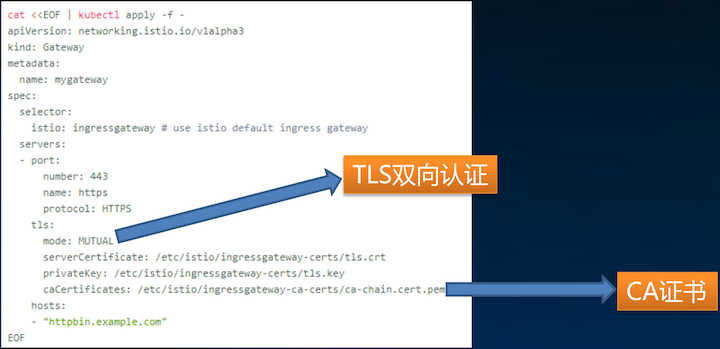
通过HTTPS访问
$ curl -v -HHost:httpbin.example.com --resolve httpbin.example.com:31390:139.159.236.125 -- cacert httpbin.example.com/2_intermediate/certs/ca-chain.cert.pem https://httpbin.example.com:31390/status/418
curl: (35) error:14094410:SSL routines:SSL3_READ_BYTES:sslv3 alert handshake failure
$ curl -v -HHost:httpbin.example.com --resolve httpbin.example.com:31390:139.159.236.125 --cacert httpbin.example.com/2_intermediate/certs/ca-chain.cert.pem --cert httpbin.example.com/4_client/certs/httpbin.example.com.cert.pem --key httpbin.example.com/4_client/private/httpbin.example.com.key.pem https://httpbin.example.com:31390/status/418
Gateway要验证客户端的证书，所以必须携带证书才能访问
3-10 Istio访问外部服务
Istio网格内默认不能访问外部服务，如果需要访问外部服务有三种方式:
Istio安装时设置:
--set global.proxy.includeIPRanges="10.0.0.1/24"
创建应用时指定pod annotation
traffic.sidecar.istio.io/includeOutboundIPRanges: "127.0.0.1/24,10.96.0.1/24“
创建ServiceEntry
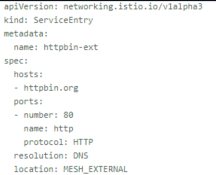
允许集群内访问外部服务 http://httpbin.org:80
3-11 通过egress gateway控制访问外部服务
访问: https://edition.cnn.com/politics
- 1) 创建
ServiceEntry，允许访问edtion.cnn.com - 2) 创建
Gateway，指定egress gateway监听端口 - 3) 创建
VirtualService，指定路由规则， - 网格内普通应用访问
edtion.cnn.com:443，全部 转发到egress-gateway，egress-gateway透明转发 - 4) 创建
DestinationRule，指定subset
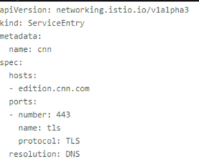 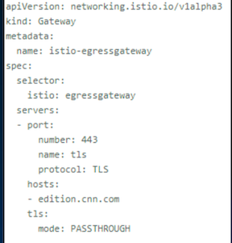
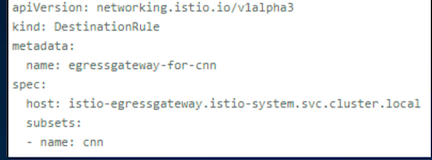 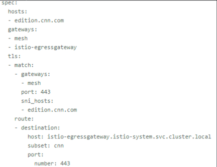 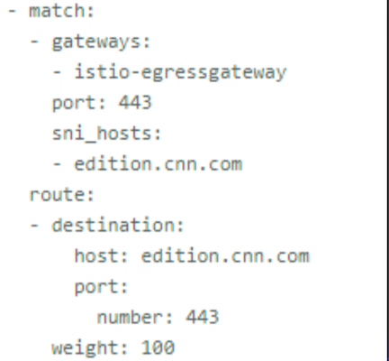